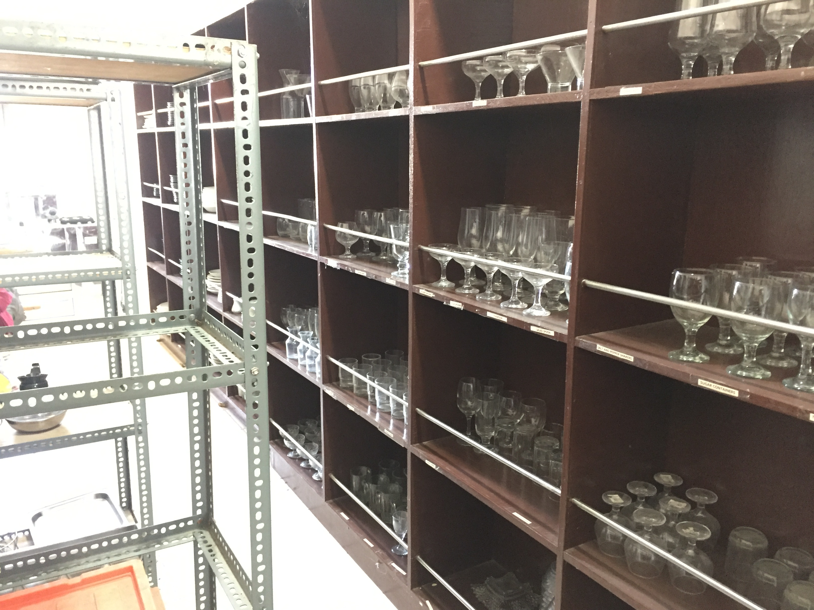
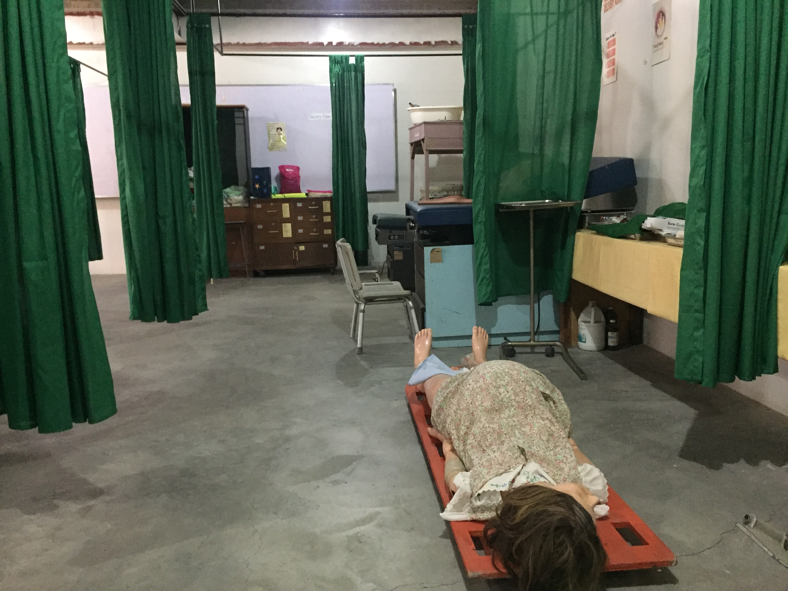
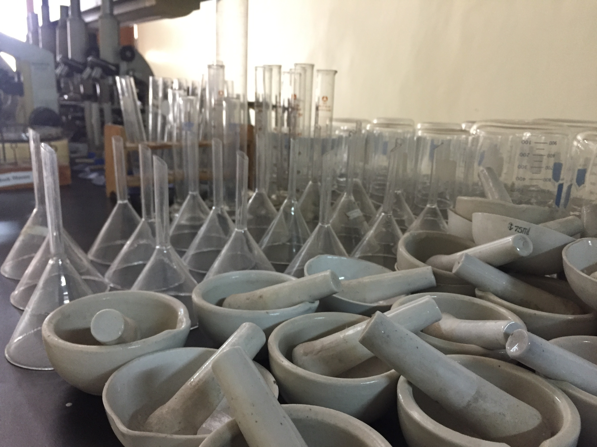

About University of Eastern Pangasinan
Building future leaders through innovation and excellence
Our Story
Founded in 2005, University of Eastern Pangasinan has grown into a center of academic excellence. Our mission is to provide accessible, high-quality education that prepares students for real-world challenges.
Over the years, the university has continuously evolved by embracing innovation, modern teaching strategies, and global standards in education. We have built strong partnerships with industries and organizations to ensure that our students gain practical experience and career-ready skills.
Today, University of Eastern Pangasinan stands as a trusted institution committed to developing future leaders, critical thinkers, and professionals who can make a positive impact in society.

What We Offer
Quality Education
Industry-ready curriculum and modern teaching methods.
Modern Facilities
State-of-the-art laboratories and campus resources.
Career Opportunities
Strong partnerships with companies and industries.
Student Support
Guidance, counseling, and student-centered programs.
Facilities






Our Vision
A leading local university known to develop excellent and virtuous professionals who are catalysts of progress for both the local and global communities.
Our Mission
University of Eastern Pangasinan is dedicated to producing highly competent and morally responsible UEPians through innovation, industry-focused education, sustainable research, and values-based curriculum. We commit to shaping ethical trailblazers bringing our principle-centered culture defining our values of Maka-Diyos, Marunong and Malinis.
Core Values - Uprightness, ,Excellence Passion
Integrity
We uphold honesty, transparency, and accountability in all actions.
Excellence
We strive for the highest standards in education and service.
Innovation
We embrace new ideas and technologies for continuous improvement.
Collaboration
We work together to achieve shared goals and success.
Why Choose University of Eastern Pangasinan?
University of Eastern Pangasinan stands as a beacon of quality education, combining academic excellence with real-world experience. Our programs are designed to equip students with the knowledge, skills, and mindset needed to succeed in today's competitive world.
- ✔ Industry-relevant curriculum
- ✔ Experienced faculty members
- ✔ Modern campus and facilities
- ✔ Strong career support and internships